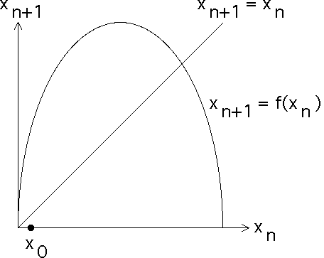

|  |
| To represent the dynamics of this process, we label the x-axis xn and the y-axis xn+1. | ||||
| That is, if the x-coordinate
of a point is one of the xn, then the y-coordinate is | ||||
| We will represent the sequence of values x0, x1, x2, x3, ... by the sequence of points | ||||
| ||||
| Select the
starting value x0 and plot the point | ||||
| Click the picture to see the next step. |
Return to Graphical Iteration